Six matched runs · 2048 × 1024 · 100 eddy times · one seed · 6 November 2026
| Claim | Evidence | Assessment |
|---|---|---|
| PV homogenization generates the jets | In the top 0.125 depth, final mean-PV variance is 0.976 of its initial value in the full run and 1.107 in QL. RMS gradients are 1.107 and 1.453 of the initial analytic-gradient norm. Early full-run profiles also fail to flatten. | Not supported as broad-layer homogenization in this pilot. Thin, localized plateaux remain a separate question. |
| An inverse cascade meets a wave-induced spectral barrier | The full system transfers energy upscale early. At radius 16 cycles, nonlinear inward transfer at 25 Te differs by only about 2% between deep water and control when integrated over the whole depth. Upper-layer directional depletion strengthens later, with depth/estimator dependence. | Inverse transfer and anisotropy: yes. A localized curved barrier: unproven. Full-depth flux cannot resolve a surface-only barrier, and late small-scale accumulation weakens the evidence. |
| Momentum-flux convergence builds mean currents | QL mean-energy fractions are 5.93% with deep-water waves and 2.03% without them. Native signed stress reconstructs mean advection; its 0.1-Te time integral agrees to 0.003% in deep QL and 0.032% in deep full. | Supported for the simulated mean-flow budget. Radiation from a source, group propagation, reflection and critical-level absorption are not independently demonstrated. |
The surface waves are deep water: us(z) = 0.03125e8z, ∂zus = 0.25e8z, surface-wave k = 4 and decay depth 0.125. The current domain is 0 ≤ x < 4, −2 ≤ z ≤ 0, hence kH = 8. This is an exactly two-dimensional current model with periodic x and impermeable, free-slip vertical boundaries. No constant-gradient case substitutes for this target.
All six cases use identical saved seed-1 velocities: the 27-cycle ring, width 1, nominal u0 = 1.563598513 × 10−4, Te = 37.69911184, and initial UL = 0. The physical mean Eulerian current is therefore −us initially in wave cases. Numerics are centered second-order C-grid advection, SSPRK3, explicit viscosity 10−10, maximum step 1 and CFL 0.5. These are the approved mechanism pilots; they differ from the earlier WENO runs in the 1000-Te gallery.
| Case | E(100)/E(0) | Mean-energy fraction | Grid-tail fraction |
|---|---|---|---|
| deep-linear-s1 | 0.9787 | 0.00% | 2.181e-10% |
| nowave-linear-s1 | 0.9786 | 0.00% | 6.22e-26% |
| deep-ql-s1 | 0.9787 | 5.93% | 0.02284% |
| nowave-ql-s1 | 0.9787 | 2.03% | 1.152e-05% |
| deep-full-s1 | 0.9300 | 1.45% | 7.797% |
| nowave-full-s1 | 0.9314 | 0.67% | 7.49% |
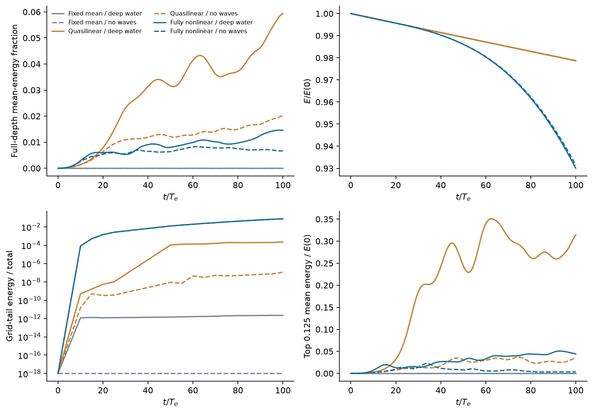
We use q = −∂zus + ∂zu − ∂xw, so Q = −0.25e8z + Uz. Mean-profile variance, eddy variance and total layer-centered variance are measured separately on the native PV nodes. Reduced mean-profile variance alone would not establish irreversible mixing.
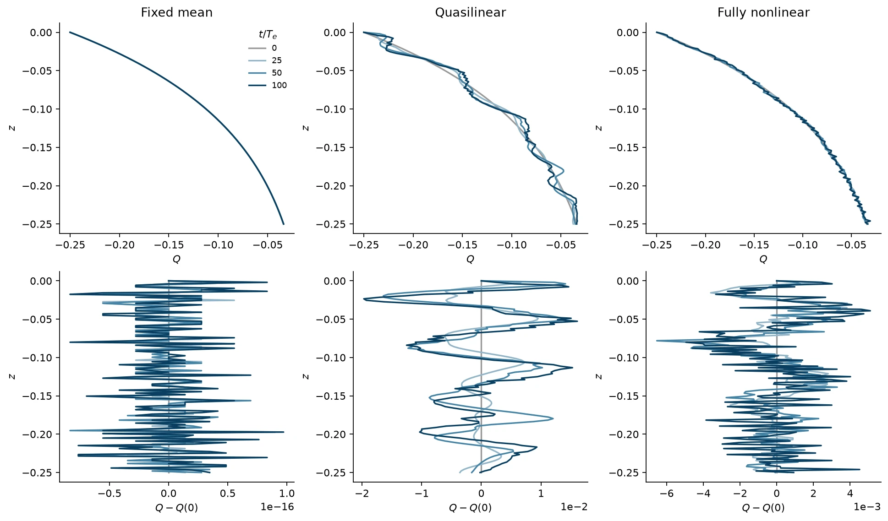
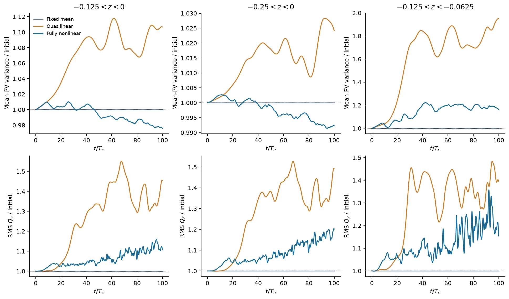
There is also an energy limitation, independent of plotting. If Q is constant in a layer, its mean current must have the form U(z) = us(z) + az + b. Minimizing ½H−1∫U² dz over a and b gives an optimistic lower bound on the total energy needed: it permits the entire energy reservoir to become that mean flow and ignores extra boundary/global constraints. The native-grid version enforces U differences from the prescribed s at interior PV nodes.
| Layer | Minimum energy / initial total energy |
|---|---|
| -0.0625 < z < 0 | 0.0656 |
| -0.125 < z < 0 | 1.32 |
| -0.25 < z < 0 | 17.7 |
| -0.5 < z < 0 | 125 |
| -0.125 < z < -0.0625 | 0.0241 |
Thus exact flat PV across the entire top decay depth is energetically inaccessible in these unforced, nearly energy-conserving runs: its relaxed lower bound is 1.32 times the initial total energy. The top quarter requires 17.7 times as much. This does not rule out thin plateaux or partial flattening; it rules out treating broad homogenization as an automatic outcome of this initial condition. The 0.0625-thick interior layer is energetically allowed yet does not show persistent flattening here.
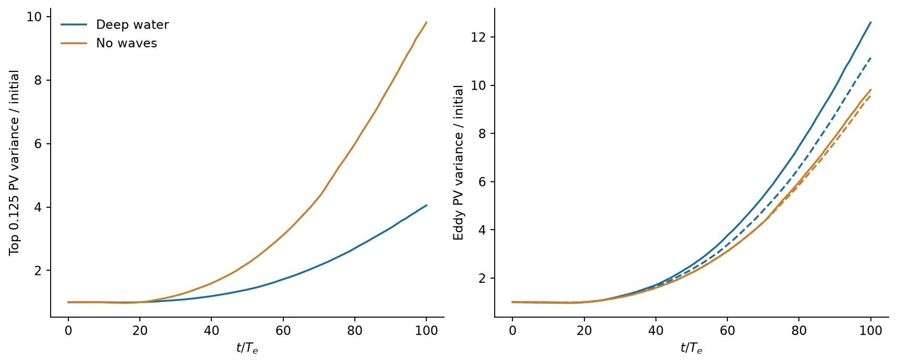
Below, horizontal Lagrangian velocity appears above its corresponding eddy spectrum. K = 0 is removed before the eddy display. Both cases share the same scale in each figure. The primary comparison uses the top 0.25 depth. There is no fitted exclusion curve: the pilot has not established one.
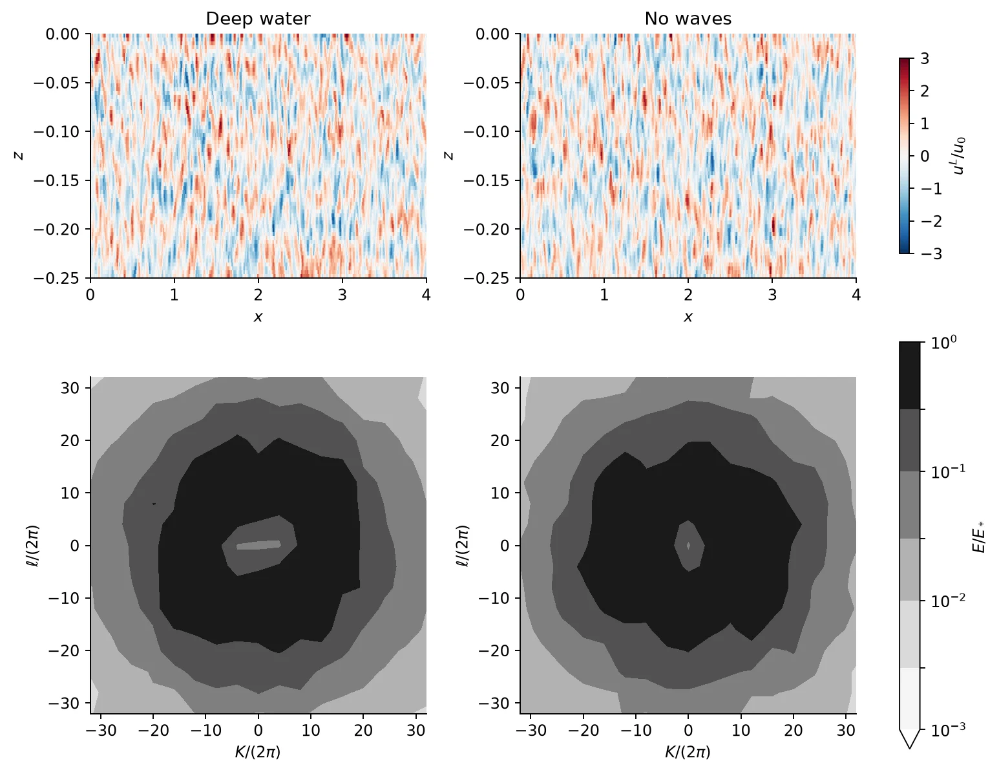
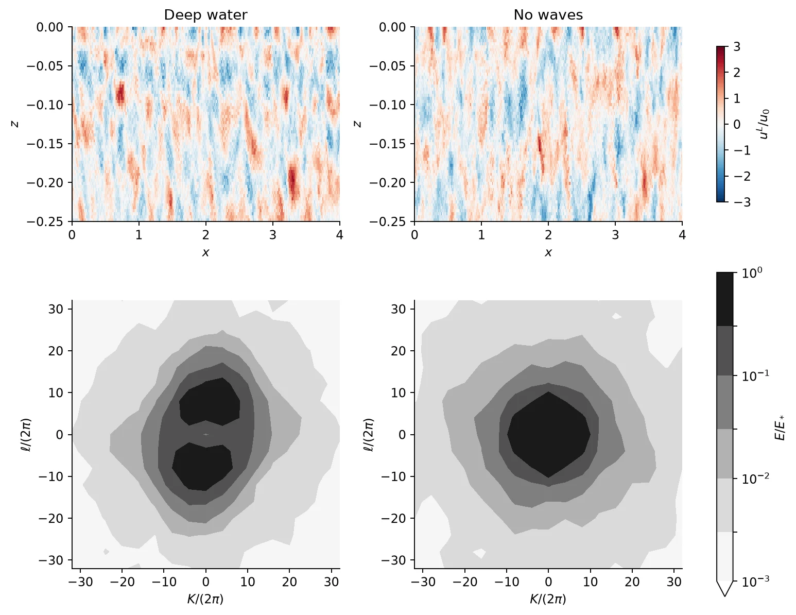
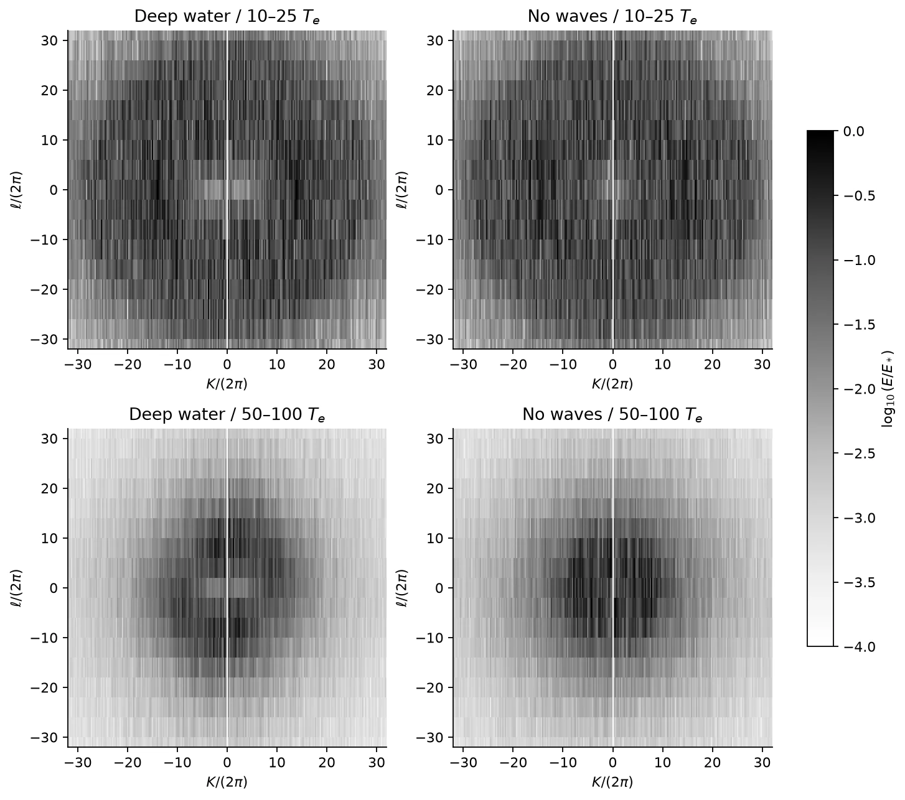
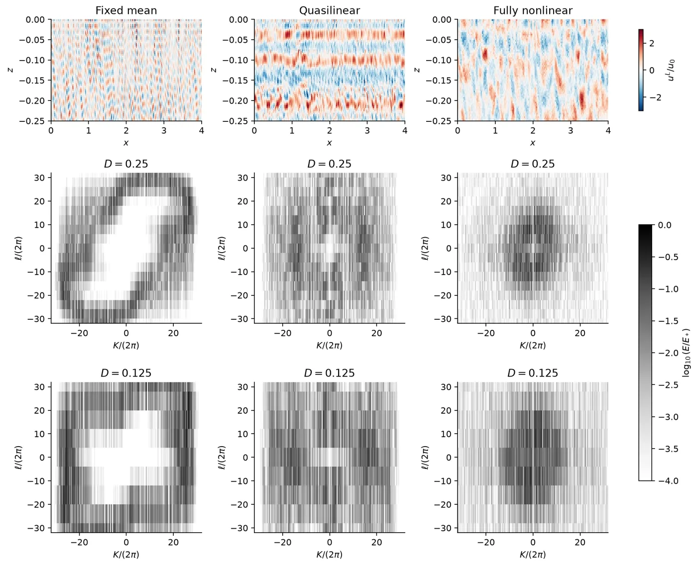
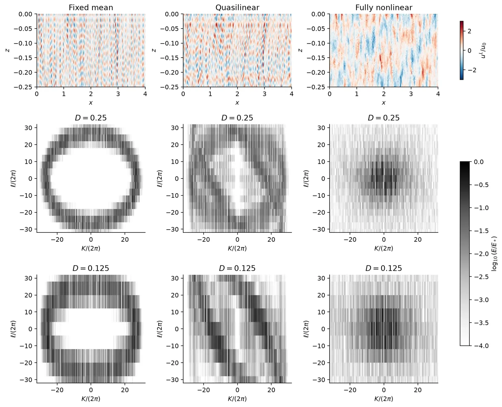
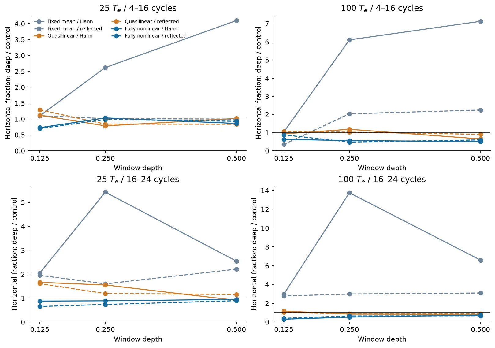
In the top 0.25 at 25 Tₑ, the 4–16-cycle horizontal fraction is essentially unchanged (wave/control 1.03 Hann, 0.98 reflected); in 16–24 it is reduced (0.88, 0.73). At 100 Tₑ the corresponding ratios are 0.56/0.48 and 0.53/0.64, but the numerical limitation has grown. At D = 0.125, direct vertical spacing is 8 cycles; at D = 0.25 it is 4. Meanwhile the imposed PV gradient varies by e and e² across those supports. More cells alone cannot remove this localization–spectral-resolution tradeoff.
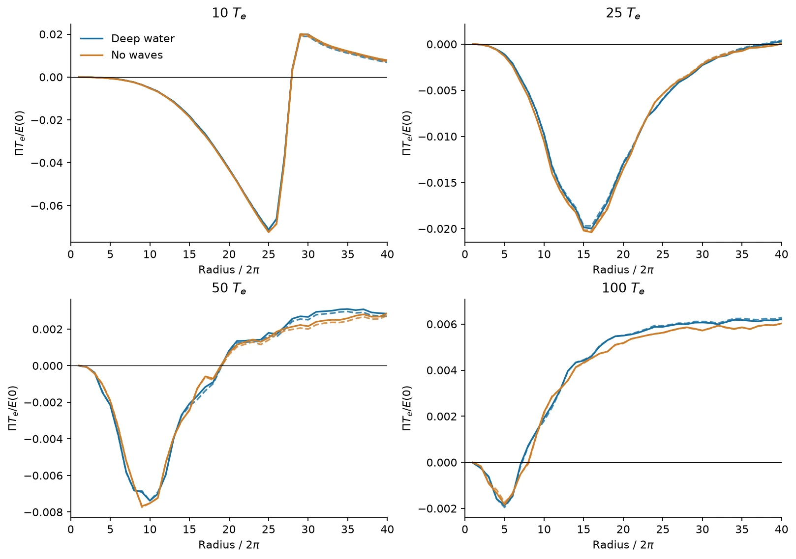
Native stress is formed at the staggered-grid locations and its signed all-K cospectrum reconstructs the physical stress to roundoff. For evolving-mean arms, U growth is dominated by −∂z〈ũw̃〉. Integrated U is conserved to roundoff; direct mean Stokes and pressure contributions are negligible. The 0.1-Tₑ sampled stress integral is checked independently against exact accumulated Runge–Kutta mean-advection increments. Integrated R Uz is positive, accounting for mean-energy growth up to small viscosity/quadrature corrections.
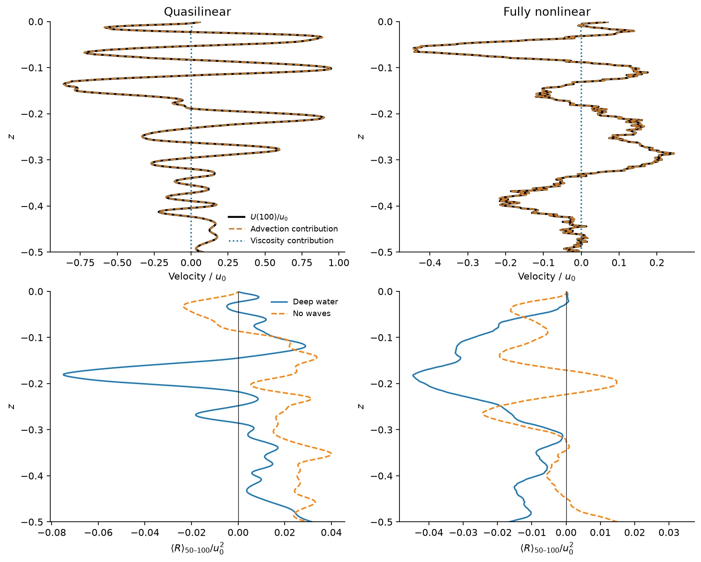
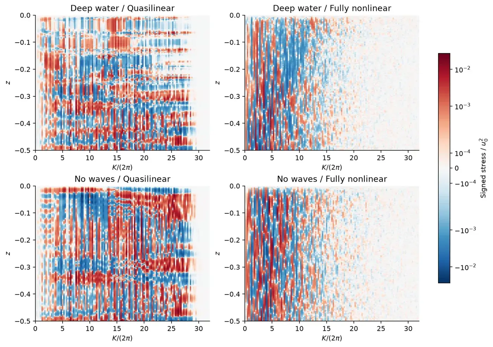
The QL comparison demonstrates that an eddy–eddy inverse cascade among nonzero K is not necessary for mean-current growth in this setup. It does not show that full-system jets are predominantly generated by radiating vortex waves: QL changes the available nonlinear dynamics, and the no-wave QL control also generates mean flow.
The Vallis–Matilsky–Nicolas source-radiation argument requires identifiable waves propagating away from a source. This pilot starts with a depth-distributed random ring, rather than a localized source. We have not independently measured packet group velocity, established reflection at a turning level, or demonstrated critical-layer absorption. Using the assumed dispersion relation to infer group velocity from the stress sign would be circular. Those parts remain untested here.
All six cases have 1001 dense diagnostic outputs and 101 full-velocity times, with full tendency checkpoints at 0, 10, 25, 50 and 100 Tₑ. Original array 66829261 completed the four linear/full cases. The QL cases initially failed at time zero because a pressure-work identity was normalized by cancellation-level work. Array 66837635 reran only those two cases after an actual-state regression and deliberate corrupted-flux rejection test; the physics and stepping operators were unchanged.
Independent SciPy transforms reproduce the native kinetic-energy norm to below 10⁻¹⁴ relative error. Offline centered-advection reconstruction matches the stored component fields. Online energy and mean-momentum identities close near roundoff. These establish bookkeeping consistency, not resolution or PV conservation by the discrete nonlinear scheme. The grid-tail energy grows from 0.008% at 10 Tₑ to 0.263% at 25, 1.27% at 50 and 7.80% at 100 in deep full. In deep QL it is 0.0228% at 100. One resolution and one seed cannot establish convergence or reproducibility.
No new simulations are launched by this assessment. Any follow-up simulation needs a separately specified and confirmed setup.
Numerical assessment · Configuration and checks · Case metrics · PV budgets · Momentum budgets · Energy bounds · Angular/window metrics
Analysis and model source. Full native fields and dense diagnostic archives remain on Unity. Public figure data are listed below.
All spectral files by case, window and time · Data checksums
Spectral files retain both signed wavenumbers, linear per-bin energy, every plotted window/estimator and the stated snapshots/averages in the crop |K|/(2π), |ℓ|/(2π) ≤ 40. They are neither normalized nor clipped. Evolution files use 0.1-Tₑ sampling. Profile files use 0, 10, 25, 50 and 100 Tₑ. Radial flux files are native full-domain cumulative component work, not a local cascade flux.
The experiments and assessment here are exactly two-dimensional. No claim about three-dimensional turbulence follows from this pilot. The manuscript has not been edited.